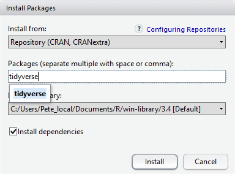

Before we Start
Overview
Teaching: 25 min
Exercises: 15 minQuestions
How to find your way around RStudio?
How to interact with R?
How to manage your environment?
How to install packages?
Objectives
Install latest version of R.
Install latest version of RStudio.
Navigate the RStudio GUI.
Install additional packages using the packages tab.
Install additional packages using R code.
What is R? What is RStudio?
The term “R” is used to refer to both the programming language and the
software that interprets the scripts written using it.
RStudio is currently a very popular way to not only write your R scripts but also to interact with the R software. To function correctly, RStudio needs R and therefore both need to be installed on your computer.
To make it easier to interact with R, we will use RStudio. RStudio is the most popular IDE (Integrated Development Environmemt) for R. An IDE is a piece of software that provides tools to make programming easier.
Why learn R?
R does not involve lots of pointing and clicking, and that’s a good thing
The learning curve might be steeper than with other software, but with R, the results of your analysis do not rely on remembering a succession of pointing and clicking, but instead on a series of written commands, and that’s a good thing! So, if you want to redo your analysis because you collected more data, you don’t have to remember which button you clicked in which order to obtain your results; you just have to run your script again.
Working with scripts makes the steps you used in your analysis clear, and the code you write can be inspected by someone else who can give you feedback and spot mistakes.
Working with scripts forces you to have a deeper understanding of what you are doing, and facilitates your learning and comprehension of the methods you use.
R code is great for reproducibility
Reproducibility is when someone else (including your future self) can obtain the same results from the same dataset when using the same analysis.
R integrates with other tools to generate manuscripts from your code. If you collect more data, or fix a mistake in your dataset, the figures and the statistical tests in your manuscript are updated automatically.
An increasing number of journals and funding agencies expect analyses to be reproducible, so knowing R will give you an edge with these requirements.
R is interdisciplinary and extensible
With 10,000+ packages that can be installed to extend its capabilities, R provides a framework that allows you to combine statistical approaches from many scientific disciplines to best suit the analytical framework you need to analyze your data. For instance, R has packages for image analysis, GIS, time series, population genetics, and a lot more.
R works on data of all shapes and sizes
The skills you learn with R scale easily with the size of your dataset. Whether your dataset has hundreds or millions of lines, it won’t make much difference to you.
R is designed for data analysis. It comes with special data structures and data types that make handling of missing data and statistical factors convenient.
R can connect to spreadsheets, databases, and many other data formats, on your computer or on the web.
R produces high-quality graphics
The plotting functionalities in R are endless, and allow you to adjust any aspect of your graph to convey most effectively the message from your data.
R has a large and welcoming community
Thousands of people use R daily. Many of them are willing to help you through mailing lists and websites such as Stack Overflow, or on the RStudio community. Questions which are backed up with short, reproducible code snippets are more likely to attract knowledgeable responses.
Not only is R free, but it is also open-source and cross-platform
Anyone can inspect the source code to see how R works. Because of this transparency, there is less chance for mistakes, and if you (or someone else) find some, you can report and fix bugs.
Because R is open source and is supported by a large community of developers and users, there is a very large selection of third-party add-on packages which are freely available to extend R’s native capabilities.


A tour of RStudio
Knowing your way around RStudio
Let’s start by learning about RStudio, which is an Integrated Development Environment (IDE) for working with R.
The RStudio IDE open-source product is free under the Affero General Public License (AGPL) v3. The RStudio IDE is also available with a commercial license and priority email support from RStudio, Inc.
We will use the RStudio IDE to write code, navigate the files on our computer, inspect the variables we create, and visualize the plots we generate. RStudio can also be used for other things (e.g., version control, developing packages, writing Shiny apps) that we will not cover during the workshop.
One of the advantages of using RStudio is that all the information you need to write code is available in a single window. Additionally, RStudio provides many shortcuts, autocompletion, and highlighting for the major file types you use while developing in R. RStudio makes typing easier and less error-prone.
Getting set up
It is good practice to keep a set of related data, analyses, and text self-contained in a single folder called the working directory. All of the scripts within this folder can then use relative paths to files. Relative paths indicate where inside the project a file is located (as opposed to absolute paths, which point to where a file is on a specific computer). Working this way makes it a lot easier to move your project around on your computer and share it with others without having to directly modify file paths in the individual scripts.
RStudio provides a helpful set of tools to do this through its “Projects” interface, which not only creates a working directory for you but also remembers its location (allowing you to quickly navigate to it). The interface also (optionally) preserves custom settings and open files to make it easier to resume work after a break.
Create a new project
- Under the
Filemenu, click onNew project, chooseNew directory, thenNew project - Enter a name for this new folder (or “directory”) and choose a convenient
location for it. This will be your working directory for the rest of the
day (e.g.,
~/data-carpentry) - Click on
Create project - Create a new file where we will type our scripts. Go to File > New File > R
script. Click the save icon on your toolbar and save your script as
“
script.R”.
The RStudio Interface
Let’s take a quick tour of RStudio.

RStudio is divided into four “panes”. The placement of these panes and their content can be customized (see menu, Tools -> Global Options -> Pane Layout).
The Default Layout is:
- Top Left - Source: your scripts and documents
- Bottom Left - Console: what R would look and be like without RStudio
- Top Right - Enviornment/History: look here to see what you have done
- Bottom Right - Files and more: see the contents of the project/working directory here, like your Script.R file
Organizing your working directory
Using a consistent folder structure across your projects will help keep things organized and make it easy to find/file things in the future. This can be especially helpful when you have multiple projects. In general, you might create directories (folders) for scripts, data, and documents. Here are some examples of suggested directories:
data/Use this folder to store your raw data and intermediate datasets. For the sake of transparency and provenance, you should always keep a copy of your raw data accessible and do as much of your data cleanup and preprocessing programmatically (i.e., with scripts, rather than manually) as possible.data_output/When you need to modify your raw data, it might be useful to store the modified versions of the datasets in a different folder.documents/Used for outlines, drafts, and other text.fig_output/This folder can store the graphics that are generated by your scripts.scripts/A place to keep your R scripts for different analyses or plotting.
You may want additional directories or subdirectories depending on your project needs, but these should form the backbone of your working directory.

The working directory
The working directory is an important concept to understand. It is the place where R will look for and save files. When you write code for your project, your scripts should refer to files in relation to the root of your working directory and only to files within this structure.
Using RStudio projects makes this easy and ensures that your working directory
is set up properly. If you need to check it, you can use getwd(). If for some
reason your working directory is not what it should be, you can change it in the
RStudio interface by navigating in the file browser to where your working directory
should be, clicking on the blue gear icon “More”, and selecting “Set As Working
Directory”. Alternatively, you can use setwd("/path/to/working/directory") to
reset your working directory. However, your scripts should not include this line,
because it will fail on someone else’s computer.
Downloading the data and getting set up
For this lesson we will use the following folders in our working directory: data/, data_output/ and fig_output/. Let’s write them all in lowercase to be consistent. We can create them using the RStudio interface by clicking on the “New Folder” button in the file pane (bottom right), or directly from R by typing at console:
dir.create("data")
dir.create("data_output")
dir.create("fig_output")
Go to the Figshare page for this curriculum and download the dataset called “SAFI_clean.csv”. The direct download link is: https://ndownloader.figshare.com/files/11492171. Place this downloaded file in the data/ you just created. You can do this directly from R by copying and pasting this in your terminal (your instructor can place this chunk of code in the Etherpad):
download.file("https://ndownloader.figshare.com/files/11492171",
"data/SAFI_clean.csv", mode = "wb")
Interacting with R
The basis of programming is that we write down instructions for the computer to follow, and then we tell the computer to follow those instructions. We write, or code, instructions in R because it is a common language that both the computer and we can understand. We call the instructions commands and we tell the computer to follow the instructions by executing (also called running) those commands.
There are two main ways of interacting with R: by using the console or by using script files (plain text files that contain your code). The console pane (in RStudio, the bottom left panel) is the place where commands written in the R language can be typed and executed immediately by the computer. It is also where the results will be shown for commands that have been executed. You can type commands directly into the console and press Enter to execute those commands, but they will be forgotten when you close the session.
Because we want our code and workflow to be reproducible, it is better to type the commands we want in the script editor and save the script. This way, there is a complete record of what we did, and anyone (including our future selves!) can easily replicate the results on their computer.
RStudio allows you to execute commands directly from the script editor by using the Ctrl + Enter shortcut (on Mac, Cmd + Return will work). The command on the current line in the script (indicated by the cursor) or all of the commands in selected text will be sent to the console and executed when you press Ctrl + Enter. If there is information in the console you do not need anymore, you can clear it with Ctrl + L. You can find other keyboard shortcuts in this RStudio cheatsheet about the RStudio IDE.
At some point in your analysis, you may want to check the content of a variable or the structure of an object without necessarily keeping a record of it in your script. You can type these commands and execute them directly in the console. RStudio provides the Ctrl + 1 and Ctrl + 2 shortcuts allow you to jump between the script and the console panes.
If R is ready to accept commands, the R console shows a > prompt. If R
receives a command (by typing, copy-pasting, or sent from the script editor using
Ctrl + Enter), R will try to execute it and, when
ready, will show the results and come back with a new > prompt to wait for new
commands.
If R is still waiting for you to enter more text,
the console will show a + prompt. It means that you haven’t finished entering
a complete command. This is likely because you have not ‘closed’ a parenthesis or
quotation, i.e. you don’t have the same number of left-parentheses as
right-parentheses or the same number of opening and closing quotation marks.
When this happens, and you thought you finished typing your command, click
inside the console window and press Esc; this will cancel the
incomplete command and return you to the > prompt. You can then proofread
the command(s) you entered and correct the error.
Installing additional packages using the packages tab
In addition to the core R installation, there are in excess of 10,000 additional packages which can be used to extend the functionality of R. Many of these have been written by R users and have been made available in central repositories, like the one hosted at CRAN, for anyone to download and install into their own R environment. In the course of this lesson we will be making use of several of these packages, such as ‘ggplot2’ and ‘dplyr’.
Additional packages can be installed from the ‘packages’ tab. On the packages tab, click the ‘Install’ icon and start typing the name of the package you want in the text box. As you type, packages matching your starting characters will be displayed in a drop-down list so that you can select them.

At the bottom of the Install Packages window is a check box to ‘Install’ dependencies. This is ticked by default, which is usually what you want. Packages can (and do) make use of functionality built into other packages, so for the functionality contained in the package you are installing to work properly, there may be other packages which have to be installed with them. The ‘Install dependencies’ option makes sure that this happens.
Exercise
Use the install option from the packages tab to install the ‘tidyverse’ package.
Solution
From the packages tab, click ‘Install’ from the toolbar and type ‘tidyverse’ into the textbox, then click ‘install’. The ‘tidyverse’ package is really a package of packages, including ‘ggplot2’ and ‘dplyr’, both of which require other packages to run correctly. All of these packages will be installed automatically. Depending on what packages have previously been installed in your R environment, the install of ‘tidyverse’ could be very quick or could take several minutes. As the install proceeds, messages relating to its progress will be written to the console. You will be able to see all of the packages which are actually being installed.
Because the install process accesses the CRAN repository, you will need an Internet connection to install packages.
It is also possible to install packages from other repositories, as well as Github or the local file system, but we won’t be looking at these options in this lesson.
Installing additional packages using R code
If you were watching the console window when you started the install of ‘tidyverse’, you may have noticed that the line
install.packages("tidyverse")
was written to the console before the start of the installation messages.
You could also have installed the tidyverse packages by running this command directly at the R terminal.
Key Points
Use RStudio to write and run R programs.
Use
install.packages()to install packages (libraries).